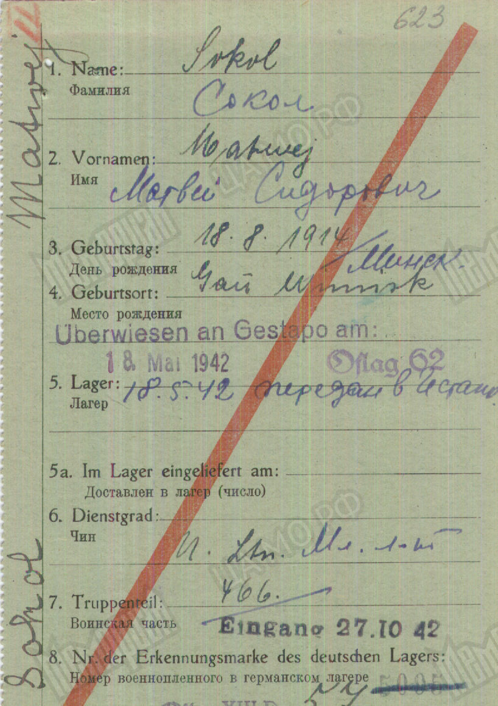
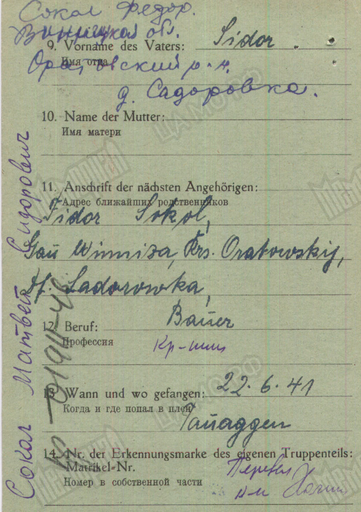

Війна нацистської Німеччини і Радянського Союзу була расово-ідеологічною. Згідно з «Настановами щодо поводження з політичними комісарами» від 6 червня 1941 р. (наказ про комісарів), політпрацівників Червоної армії необхідно було розстрілювати на місці за законами воєнного часу.
«Бойовим наказом №8» Головнокомандування Вермахту від 17 липня 1941 р. військовим посадовцям приписувалося спільно з Головним управлінням безпеки Райху проводити у таборах так звану «селекцію» (Aussonderung), тобто відбирати серед радянських військовополонених осіб, «небажаних» за расовими чи політичними ознаками (євреїв, політпрацівників, комуністів), позбавляти їх статусу військовополоненого й вбивати. У шталагах на території Райху таких бранців відправляли для страти до концентраційних таборів.
Перша сторінка «Настанов щодо поводження з політичними комісарами» (наказ про комісарів) Головнокомандування Вермахту від 6 червня 1941 р. © Bundesarchiv/ Berlin
У наказі, зокрема, наголошувалося: «Варварські азійські методи боротьби походять від політичних комісарів, тому проти них треба застосовувати без усілякого зволікання найжорстокіші заходи».
Вбивство загрожувало не лише політпрацівникам. Євреїв і, часто, жінок-військовослужбовців Червоної армії у німецькому полоні також приписувалося розстрілювати за законами воєнного часу. У повідомленнях із бойових підрозділів про розстріли радянських військовополонених від 60% до 80% випадків подавалися як акції знищення комісарів.
Одна з перших і найпоширеніших нацистських листівок для червоноармійців, у якій використовувався пропагандистський образ єврея і політрука. 1941 р. © Wikipedia
Нацистський пропагандистський плакат, у якому використовуються поширені стереотипи про сталінський режим як владу євреїв, є прикладом демонізації євреїв. 1942 р. © Приватна колекція О. Маєвського
На території України відібраних полонених розстрілювати поблизу таборів. У Вінницькому таборі розстріли здійснювали в ровах, де ховали померлих бранців. Також тут поліція безпеки і служба юезпеки (СД) проводила страти цивільних жертв. Ось свідчення німецьких охоронців на процесі проти айнзацгруп у Нюрнберзі у 1947 р.:
“У 1943 р. вантажівки з цивільними особами (чоловіками, жінками, дітьми) приїжджали до Вінницького табору майже щотижня. Вони в'їжджали в табір через центральний вхід і через "чорний хід" під'їжджали до братських могил на кладовищі. Загони з шести-семи солдатів з батальйону охорони табору призначалися черговим табору для охорони місця розстрілу, і розташовувалися приблизно за 20-25 метрів біля викопаного рову. Щоразу вантажівка привозила приблизно 25 чоловіків, жінок та дітей. Їх змушували роздягатись, спускатися по двоє або по троє в яму, а співробітники СД розстрілювали їх з краю ями”.
Додаткові фото і документи
Радянські військовополонені у Вінницькому таборі вишикувались в колони біля будинку управління табору. © Приватна колекція М. Богарта та І. Ланового.
Це будинок №2/88 колишнього другого військового містечка на околиці Вінниці (нині вул. Чехова, 14). На першому поверсі цього будинку, у колишньому службовому блоці з окремим входом, розташовувався ревір (шпиталь). На другому поверсі була кухня і їдальня для охорони табору, на третьому – житлова казарма охоронців. У таборі проводили так звану селекцію. Приречених на розстріл утримували в металевій клітці. Із Вінниці прибувала команда СД, яка здійснювала страту в ровах на кладовищі, розташованому між табором і аеродромом.
Радянські військовополонені у Вінницькому таборі під час короткого перепочинку. © Приватний архів Ернста Ройса.
Можливо, на фото зафіксований момент, який описав колишній в’язень Григорій Пінт:
“А там была такая дорожка, нужно было на этой дорожче занять очередь и ждать. Вывозили на всякие работы, на уборку улиц, каких-то помещений. Когда вели на работу или на машине везли, то мирное население сбрасывало продукты питания: сухари, хлеб, картошку” ©USA Shoah Foundation.


Картка реєстрації військовополоненого для довідкової служби Вермахту на молодшого лейтенанта Матвія Сокола, 1914 р.н. с. Сабарівка, Оратівський р-н, Вінницька обл. © ОБД Меморіал.
За даними картки можна встановити, що Сокол поблизу Таураге потрапив у полон, у травні 1942 р. пройшов “селекцію” у таборі для полонених офіцерів Гаммельбург (офлаг XIII D (62) і був визнаний неблагонадійним. Про це свідчить фіолетовий штамп “переданий гестапо 18.05.1942”. Матвія Сокола направили до концтабору Дахау, і розстріляли на полігоні Гартгаузен за два кілометри від концтабору. Службовці підрозділу СС в 1941–1942 рр. використовували тут для тренування зі стрільби як живу мішень радянських військовополонених, яких сюди привозили страчувати.
Історії військовополонених - євреїв.
Григорій Пінт, 1920 р.н., м. Твер © USA Shoa Foundation
У 1939 р. був призваний до Червоної армії. У серпні 1941 р. поблизу с. Підвисоке потрапив у полон. В’язень табору «Уманська яма». З вересня 1941 – в’язень табору військовополонених у Вінниці. У 1942 р. втік з табору, переховувався в Немирові. Пізніше Григорія викрили, що він єврей, ув’язнили в Немирівському гетто, звідки у 1943 р. він втік до партизанського загону. У 1944 р. визволений з нацистської окупації Червоною армією.
Уривок з інтерв’ю Григорія Пінта, запис: 10.11. 1996 р. м. Москва, інтерв’юер Анна Кошкіна © USA Shoa Foundation:
“Кормили нас шелухой от проса, варили. Поселили нас в барак. Там были нары двухэтажные и нас там очень много было. Спали, прижавшись друг к другу. Заедали нас вши. Мы были в окружении колючей проволоки, на вышках стояли немецкие солдаты. Выбраться практически было невозможно”.
Ігор Харпатін, 1914 р.н., с. Стара Котельня Андрушівський р-н, Житомирська обл. © USA Shoa Foundation.
Проживав у Києві. У 1939 р. призваний до Червоної армії, учасник Радянсько-Фінляндської війни. У жовтня 1942 р. потрапив у полон під Харковом, в’язень таборів військовополонених в Харкові, Білій Церкві, Вінниці. З серпня 1942 р. по травень 1945 р. ̶ в’язень табору для військовополонених шталаг XII A у місті Лімбург-ан-дер-Лан (Німеччина).
Уривок з інтерв’ю Ігоря Харпатіна, запис: 5.12. 1996 р. м. Київ, інтерв’юер Вадим Фельдаман © USA Shoa Foundation:
“В Виннице я был 3-4 месяца, чуть концы там не отдал: дизентерия, болел сильно. Нас два раза кормили и давали буханку хлеба 400 гр на четверых. В баланду входила просяная шелуха и лушпайки. Солдаты ели картошку, а в наши котлы бросали лушпайки. Так мы питались.[...]
“В Виннице первый раз проверяли на еврейство. Немцы проверяли члены. Каждый должен быть положить свой член на лапу. Если член не в порядке, направо, выводили и при нас расстреливали. Выстраивали нас по сотне. Сотню проверили, шаг вперед, вторая сотня подошла, третья. У меня в кармане была дырка. И я через дырку на головку я намазывал баланду, она липкая была, натягивал кончик шкурки и держал сильно, она минутку–две могла держать. И я так прошел проверку” [...]
“В Винницком лагере так издевались над евреями. Среди лагеря было озеро глубиною может полметра или метр. Грязь настоящая, держали этих евреев, человек 15-20, как зверей. Черные, грязные в одном нижнем белье. Их каждое утро специально выгоняли купаться в эти озера. Осень поздняя. Потом их вывезли за лагерь и автоматная очередь”.